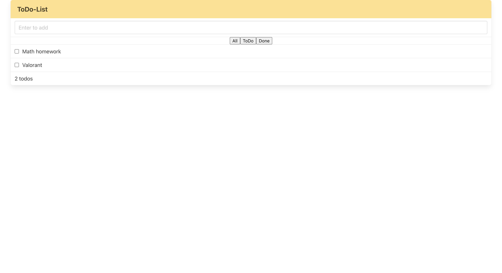
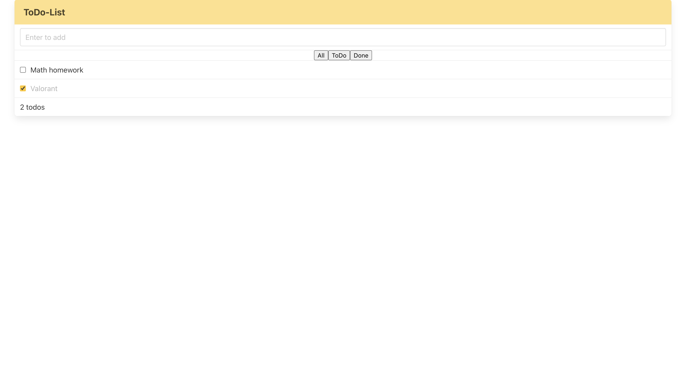
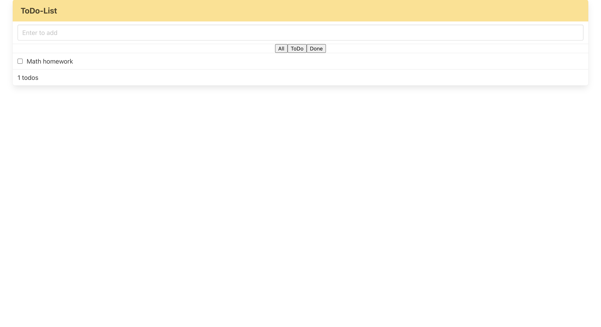
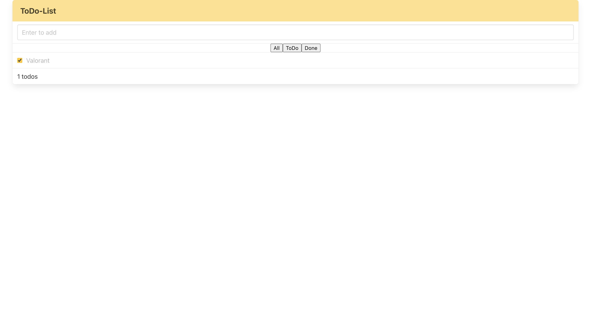

Sungwi Kim
Work
Resume
Work
>
ToDo List (2024)
A to-do list app that enables users to add tasks or mark them as completed. Additionally, tasks are organized according to their status.
Platform
Web
Stack
HTML / CSS / JavaScript / React
App Link
https://to-do-list-oqh6d97kq-sungwi-kims-projects.vercel.app
Source Code
https://github.com/sungwi/toDoList.git
Add tasks from input bar

Check as completed

Shows ToDo Status

Shows Done Status
